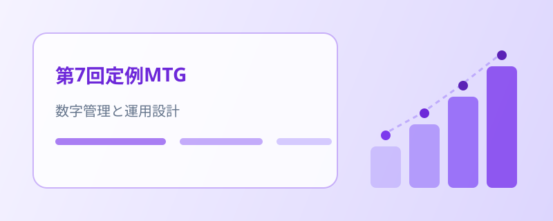

第7回定例MTG — 数字管理の徹底と面談強化シートの運用設計
前回の振り返りに続き、柱 A・B・C の進捗を共有。営業の数字管理と顧客リストの拡充、面談強化シートの運用フロー、新規事業の開発体制について協議しました。
会議の概要
ハイライト
- 柱 A — 営業数字は自社システムで管理。提案先リストの拡充を最重要課題として整理
- 柱 A — 新規開拓と休眠顧客への再アプローチを並行して推進（具体数値は社内限定）
- 柱 B — 面談強化シートの運用方法を4ステップで確立（配布 → 練習 → 評価入力 → フィードバック）
- 柱 C — SES マッチングアプリの計画を見直し、開発体制を3つに分業して属人化を防止
柱 A — 数字管理と顧客リスト
柱 A では、今後の営業見通し（具体数値は社内限定）とあわせ、営業数字の管理方法と当面の課題を共有しました。
- 営業数字は自社システムで管理する運用を確認
- 最大の課題は提案できる顧客リストの不足。新規顧客リストの拡充と、取引が離れた顧客への再アプローチを並行して実施（件数は社内限定）
- 一部の案件は翌月以降の開始に向けて調整中
柱 B — 面談強化シートの運用設計
柱 B では、社内アンケートの集計状況と、面談強化シートの運用フローを共有しました。
- 社内アンケートは集計フェーズに移行
- 面談強化シートの運用方法を4ステップで確立 — ①面談練習前にシートを配布 ②面談練習を実施 ③フォームでチェックリスト・5段階評価を入力（評価する側も入力）④データを基にフィードバック
- 将来的にはWeb アプリでシートの閲覧・データ収集・評価の見える化を一元管理する構想
- 今後は強化シートの全社展開と、5項目のアンケート展開を進める
柱 C — 新規事業の体制づくり
柱 C では、SES マッチングアプリの計画書を見直し、開発体制の整備方針を共有しました。
- 絞り込み（フィルタリング）機能を検討 — 日付・エリア（大阪／東京）・スキルなどの軸を整理
- 属人化を防ぐため、開発体制を3つに分業 — ①計画（WBS・工数見積り・マネジメント）②機能ブラッシュアップ・設計 ③契約関連（営業スケジュール・売り方・申込方法・需要の見極め）
このあと
数字管理の定着と顧客リストの拡充、面談強化シートの運用開始と全社展開、新規事業の開発体制づくりをそれぞれ進めます。 決まったことは、引き続き本サイトでお伝えします。